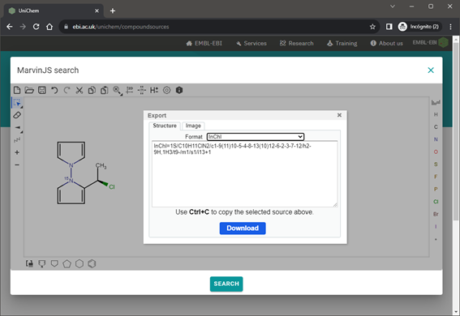
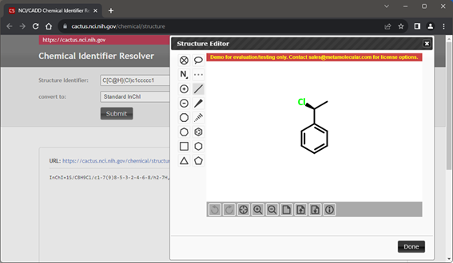
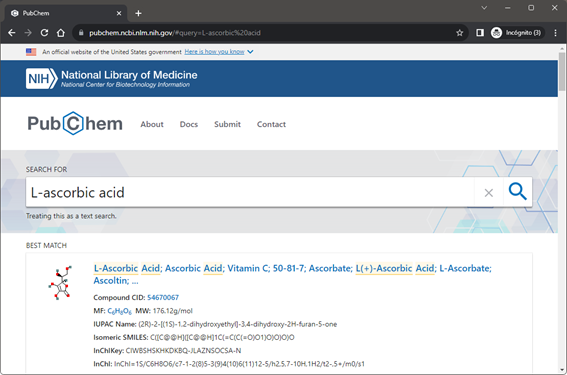
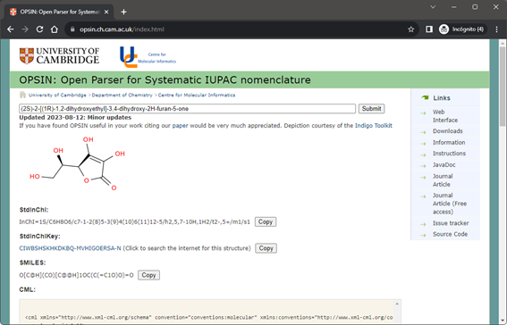
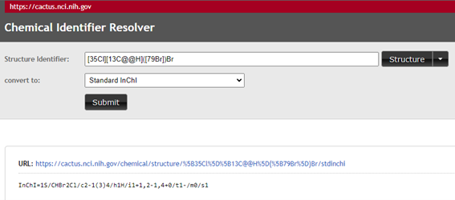
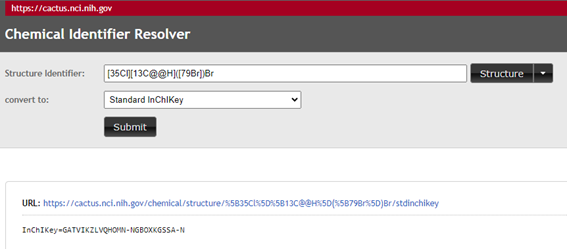
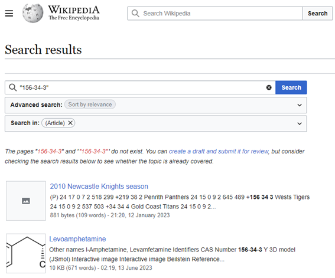
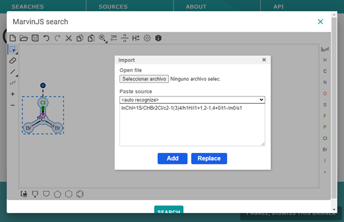

Using InChI and InChIKey to annotate your chemical entities#
About this recipe
Author: Jordi Cuadros
Reviewer: Stuart Chalk
Topics: InChI, InChIKey
Format: Tutorial
Scenarios: Retrieve the InChI and InChIKey of a chemical
Skills:
Understand what an InChI is (IUPAC, InChI-Trust)
Know what MOL files are and where to get them (Wikipedia, [Dassault Systèmes] (https://discover.3ds.com/sites/default/files/2020-08/biovia_ctfileformats_2020.pdf))
Understand what a SMILES string is (Wikipedia, OpenSMILES)
Learning outcomes: After completing this example you should understand:
What makes InChI and InChIKey convenient identifier for chemical
How to obtain the InChI and the InChIKey of a chemical
How to identify a chemical behind an InChI or an InChIKey
Citation: ‘Using InChI and InChIKey to annotate your chemical entities’, Jordi Cuadros, The IUPAC FAIR Chemistry Cookbook, Contributed: 2024-02-28 https://w3id.org/ifcc/IFCC017. https://iupac.github.io/WFChemCookbook/recipes/rec_using_inchi.html IFCC017
Reuse: This notebook is made available under a CC-BY-4.0 license.
Scenario#
So far, we are quite used to identifying chemical substances with a name, a drawing or a CAS Registry Number (CAS-RN). However, these identifiers have some issues that affect their usability for indexing and searching. A way to increase the FAIRness of our documents is to annotate our chemical substances with InChI and InChiKeys, either in papers, data, or metadata files.
Let’s do it together!
Case 1: I can draw my chemical substance accurately#
Many molecular drawing packages like ChemDraw, ChemSketch, or MarvinSketch, can output the InChI and the InChIKey for a molecule drawn on them. Other drawing packages such as the ones listed on the Wikipedia page on molecule editors may also be helpful.

Alternatively, we can use the CACTUS Chemical Identifier Resolver to get the InChI or the InChIKey of a drawn chemical.

Case 2: I can unambiguously name my chemical#
If we can name our chemical (and this name is included in the chemical databases), you can use PubChem or ChemSpider searching features, or the CACTUS Chemical Identifier Resolver, to obtain the InChI or the InChIKey.

If you can name the compound according to IUPAC systematic nomenclature, you can use the Open Parser for Systematic IUPAC nomenclature (OPSIN), to calculate (this is not a search) the InChI and the InChiKey. OPSIN can be downloaded or accessed online.

Case 3: I have a MOL file for my chemical#
If you have a MOL or SDF file for your molecule, you can use the UniChem service to upload the file and obtain its InChI and InChIKey.
You can also use the following software that you install locally to process the MOL file:
to convert a MOL file to InChI or InChIKey.
Many common molecular drawing programs can also export and import MOL files. This way. they can also be used to convert a MOL file to an InChI or InChIKey. Make sure to check that isotope and stereochemistry information is preserved when importing and exporting MOL files.
Case 4: I have the SMILES string or the InChI for my chemical#
In the case you are able to write our chemical as a SMILES string or already have an InChI and just need the InChIKey for it, we may use the CACTUS Chemical Identifier Resolver.


Please be aware that complex InChIs can not be interpreted by the CACTUS Chemical Identifier Resolver.
Again, import and export features of the common molecular drawing packages may be useful in this case. Last but not least, databases can also help find an InChI or an InChIKey from a SMILES; provided the compound is included in the database. Remember to check the responses before taking them as correct (specially for stereochemistry and isotope distribution).
Case 5: I only have the CAS Registry Number (CAS-RN) for my chemical#
If you only have the CAS Registry Number (CAS-RN) for your chemical, you have to resort to a database to potentially find the InChI and InChIKey. Curated chemical databases, such as the ACS Common Chemistry service (for common chemicals) or SciFinder, will be among the first options to try. Other databases like PubChem, ChemSpider, Wikidata, or Wikipedia (quote your CAS-RN when searching) may also work in many cases for common chemicals.

Last step: Let’s check our InChI and InChIKey#
Once you have found the InChI and the InChIKey of a chemical species, it may be worth double-checking what you got as a result.
Quick checks#
Let’s start with some simple checks.
Does the InChI starts with the expected characters, “InChI=1S/”?
Does the InChI have the expected layers, e.g., t, m, s sublayers if you are referring to a specific isomer, or i if you have an isotopically -labelled compound?
Does the InChIKey have 27 characters?
Does it follow the expected structure 14 uppercase letters, a hyphen, 10 uppercase letters, a hyphen and one last uppercase letter?
Does it end with N if the chemical species is neutral?
Does the InChIKey has SA has the last two letters preceding the second dash? (SA there means version 1 standard)
Import your InChI into a molecular drawing tool#
You can use your preferred molecular drawing tool to import the InChI and check that the response corresponds to your chemical structure. The drawing tool at UniChem may well serve this purpose.

Google it!#
Major web search engines, like Google, Bing or Baidu can search from an InChIKey; its structure is largely specific and allows finding references and data related to your chemical specie. So, search your InChIKey and make sure you get back responses that belong to your molecule.
Use an InChI resolver#
Last, specific tools are being developed to resolve InChI and InChIKey by searching into databases. Currently, InChI and InChIKey resolution can be done at PubChem search page, UniChem, or the CACTUS Chemical Identity Resolver.
An API to resolve programmatically InChIKeys are also being developed. Progress can be checked out at InChI Resolver.